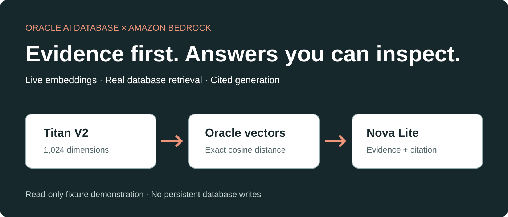
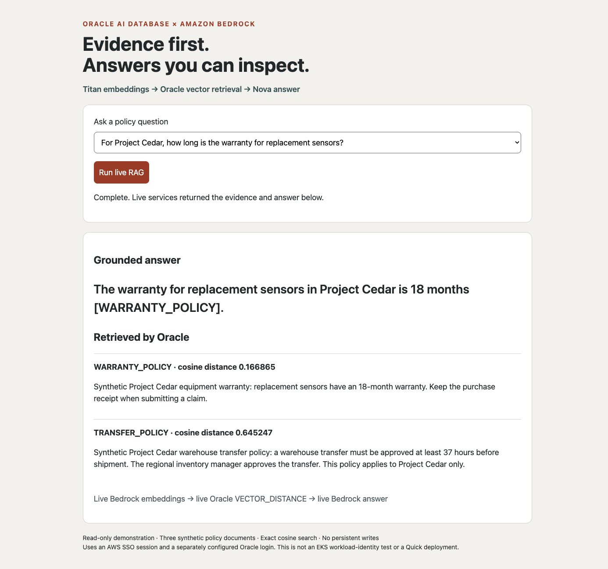

ORACLE AI DATABASE × AMAZON BEDROCK
Build and verify RAG with Oracle AI Database and Amazon Bedrock
A small, live demonstration with inspectable evidence—not a screenshot of a simulated answer.
By Paul Parkinson · October 2026

Key takeaways
- Bedrock supplies embeddings and generation; Oracle executes the retrieval SQL.
- Three synthetic policies make the expected facts and citations easy to check.
- The demo is read-only and needs no permanent ingestion table or Bedrock Knowledge Base.
- Cloud permissions, database login and workload identity are separate—not interchangeable—checks.
You can build application-managed RAG with Oracle AI Database and Amazon Bedrock by embedding a question, retrieving the nearest document vectors in Oracle, then passing only those chunks to a generation model. This demo runs that complete path against live services and exposes the evidence alongside the answer.
The browser application runs on your workstation; Oracle and Bedrock run in the cloud. It uses three synthetic fixture documents, not a production document collection. The October 9 test passed transfer, warranty and recycling questions, and an unsupported-project question produced an insufficient-evidence response.
What runs where
Browser → Python → Titan V2 → Oracle VECTOR_DISTANCE → Nova Lite → answer
The core code requests normalized 1,024-dimensional Titan V2 embeddings for each document and the question. Oracle converts the bound document JSON into rows and vectors, computes exact cosine distances and returns two chunks. Nova Lite receives the question, those chunks and an instruction to cite evidence or abstain. There is no Google Search, permanent vector index, agent write action or cached answer in this implementation.
SELECT doc_id, chunk_text,
VECTOR_DISTANCE(TO_VECTOR(embedding_json, 1024, FLOAT32),
:query_vector, COSINE) AS distance
FROM JSON_TABLE(:documents, '$[*]' COLUMNS (
doc_id VARCHAR2(32) PATH '$.id',
chunk_text VARCHAR2(4000) PATH '$.text',
embedding_json CLOB FORMAT JSON PATH '$.embedding'
))
ORDER BY distance, doc_id
FETCH FIRST 2 ROWS ONLYThe payload uses an explicit temporary CLOB locator. Real embeddings made it larger than 32 KB; a direct large-string bind produced ORA-01460 on the tested driver/database combination. The locator resolved that failure. The question uses a native VECTOR bind, and all SQL runs in a read-only transaction. Temporary LOBs are released with connection teardown.
Run the demonstration
- Clone the repository and install
requirements.txtin a Python virtual environment. - Copy
.env.exampleonly if you do not already have a private.env. Enter the expected AWS account/database, a TCPS EZConnect+ host/service, Oracle login, and required mTLS wallet settings. Keep the wallet and secrets out of Git. The wallet authenticates the TLS client; it does not replace the database-user login. - Sign into an AWS SDK profile authorized for the two Bedrock models, then run the smoke test and app:
python3 -m venv .venv
.venv/bin/python -m pip install -r requirements.txt
aws configure sso --profile oracle-bedrock
aws sso login --profile oracle-bedrock
export AWS_PROFILE=oracle-bedrock
.venv/bin/python rag_smoke_test.py
.venv/bin/python rag/app.pyOpen http://127.0.0.1:8095. Select a policy question and click Run live RAG. The complete run guide covers configuration, recovery and limitations.
Prove the answer changes with the question
- Ask when Project Cedar transfers must be approved: expect 37 hours and
TRANSFER_POLICY. - Ask about replacement-sensor warranty: expect 18 months and
WARRANTY_POLICY. - Ask about Project Maple recycling: expect Fridays and
RECYCLING_POLICY. - Ask about Project Aspen: there is no matching policy, so inspect the insufficient-evidence response.

A citation is not by itself proof that a response is grounded. Compare the answer with the returned document and inspect the retrieval code. The smoke test asserts a known ranking, fact and citation; it is not a comprehensive hallucination benchmark. Model wording can vary across calls.
Keep the demonstration safe and the claims narrow
The app binds only to loopback, checks Host and Origin, permits four bounded questions and returns no raw credential-bearing errors. It checks the AWS account and Oracle database before inference. Use a dedicated database login with only the privileges needed; the initial live run used the already-configured ADMIN account, but this fixture needs only a connection and SELECT expressions. Production requires stronger application authentication, authorization, operational limits and separate ingestion privileges.
Each run performs four embedding invocations and one generation call, with normal Bedrock charges. There are no persistent database writes. The separate memory application remains under memory/; it is not the application demonstrated here.
References
- Titan Text Embeddings V2 parameters
- Bedrock Converse API
- Oracle Python VECTOR support
- Amazon Quick remote MCP integration requirements
FAQ
Is the data real?
The services and SQL execution are real. The three policy documents are intentionally synthetic test fixtures.
Does this need a Bedrock Knowledge Base?
No. The Python application controls retrieval directly through Oracle SQL.
Does a successful demo prove EKS passwordless login?
No. This demo uses an AWS SSO session and separately configured Oracle credentials. Pod identity, token exchange and Oracle SQL login require their own tests.
Can I publish this server?
Not as-is. It is a loopback demonstration. Build authenticated, authorized hosting with bounded access before exposing any database-backed service.